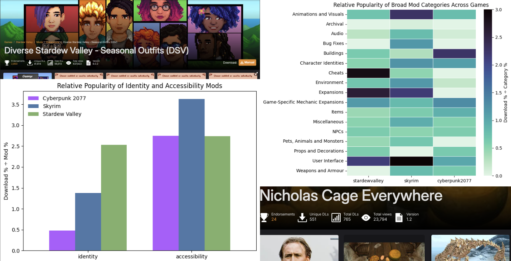
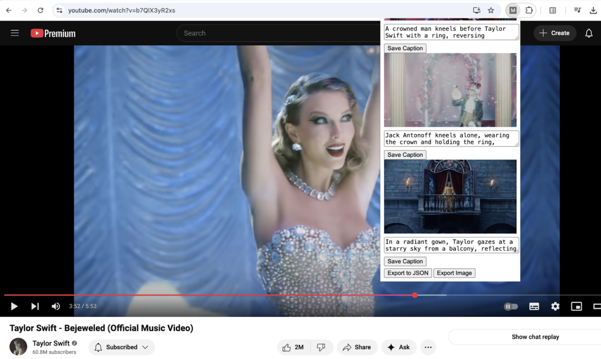
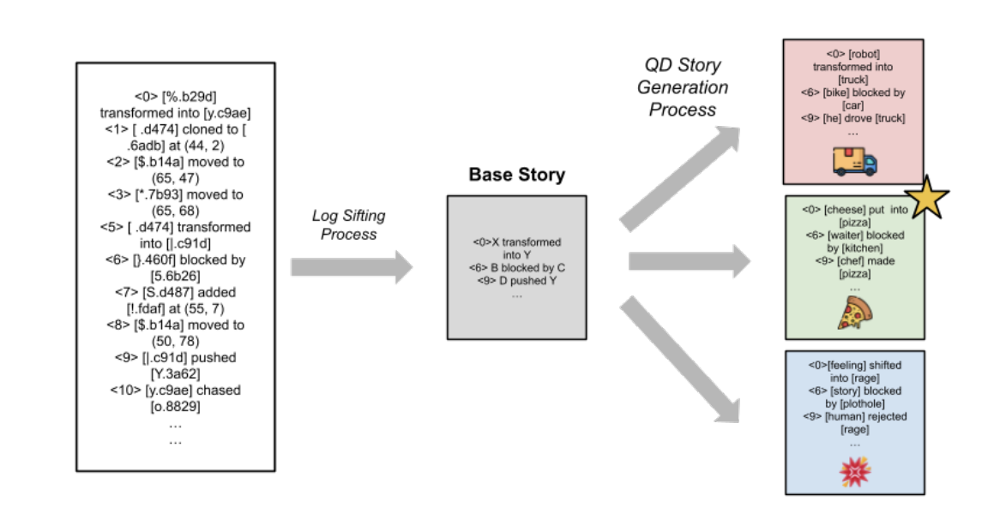

Rewriting the Game: Exploring Mods as a Creative Community Practice
ACM Creativity and Cognition 2026
with M Charity, Vera L. Zhong and Adam M. Smith

MVAuLT: Authoring Interpretive Alt Text for Music Videos (2025)
ACM ASSETS 2025
with Vera L. Zhong, Ace S. Chen, Madison Gruender and Kathryn E. Ringland

Amorphous Interpretations: Diverse Narrative Generation for Open-Ended Simulation Environments (2025)
FDG INT Workshop 2025
with Julian Togelius and M Charity